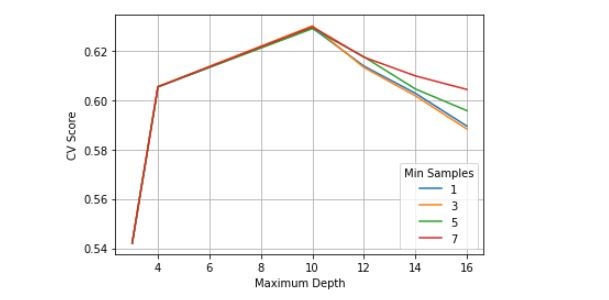

About
Applied AI Engineer specializing in production-grade AI systems across Generative AI, NLP, OCR, Computer Vision, and scalable MLOps infrastructure. Experienced in designing and deploying enterprise AI solutions, including Retrieval-Augmented Generation (RAG), clinical document intelligence pipelines, predictive healthcare models, and AI-powered automation systems.
I currently build AI solutions within healthcare using technologies such as Databricks, MLflow, vector databases, LLMs, and cloud-native data platforms to solve real-world business problems at scale. I’m passionate about building practical AI systems that move beyond prototypes into measurable business impact. Check out my Resume.
Contact
You can email me or contact me on my socials below.
FER Project

Facial Expression Recognition Group Capstone
Highlights
- Developed a Facial Expression Recognition (FER) system using machine learning and ensemble modeling techniques on image-based emotion classification data.
- Experimented with multiple machine learning approaches, including Decision Trees, Random Forest, and LightGBM, to compare performance across classification tasks.
- Implemented hyperparameter optimization using Optuna to improve model performance and evaluate tradeoffs between models.
- Designed an ensemble prediction framework combining outputs from top-performing models to improve classification performance.
- Built a meta-modeling approach using prediction outputs to determine optimal model selection strategies.
- Performed exploratory data analysis (EDA), feature evaluation, and model experimentation using Kaggle workflows.
Skills
Applied AI & Generative AI:
LLMs, Retrieval-Augmented Generation (RAG), NLP/NER, OCR, Prompt Engineering, Agentic AI, Embeddings, Transformers, Prompt Orchestration, Inference Pipelines
Machine Learning & Computer Vision:
Computer Vision, Predictive Modeling, Classification, Ensemble Learning, Model Evaluation, Scikit-Learn, TensorFlow, PyTorch
Programming & Data Engineering:
Python, SQL, REST APIs, Spark, Distributed Processing, Data Pipelines
Cloud, MLOps & Infrastructure:
Databricks, MLflow, Vector Databases, Unity Catalog, Model Serving Endpoints, Azure, CI/CD (Azure DevOps), Docker, Git
I specialize in building production-grade AI systems with experience across enterprise NLP, OCR, computer vision, healthcare AI, scalable ML pipelines, and LLM-powered applications.